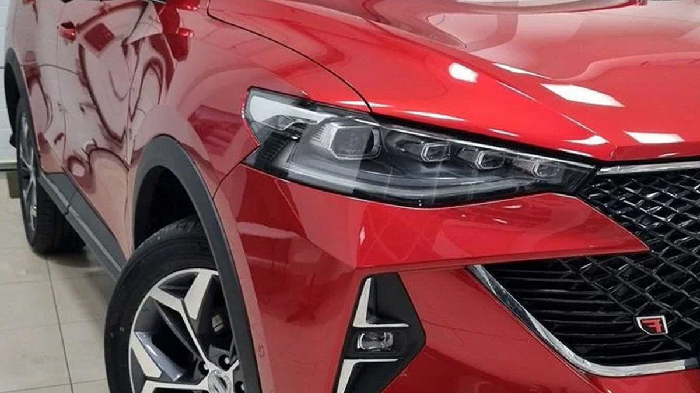

Субботний гипермаркет, парковка в снежной каше. В одной руке два пакета, в другой ребёнок, который норовит убежать к соседней машине. Чтобы открыть багажник, надо поставить пакеты прямо в слякоть, нажать кнопку на грязной крышке и поднять её, стараясь не вытереть рукавом всю соль с кромки. На машине с приводом крышка поднялась бы сама от кнопки на ключе.
Электропривод багажника Хавал ставят как раз ради таких минут: крышка открывается и закрывается сама, от кнопки на ключе, в салоне или на двери. На части комплектаций Haval он есть с завода, на остальные его можно установить отдельно. Ниже разбираем, как устроен привод, чем отличается установка на F7, Jolion и Dargo, где у этих систем слабые места зимой и что спросить у мастера.

Как устроен электропривод двери багажника
На обычной машине крышку держат два газовых упора: вы её приподнимаете, а дальше они дотягивают её вверх. Электропривод двери багажника заменяет эти упоры электрическими стойками. Внутри каждой стойки мотор и винтовая пара, которая толкает шток вверх или тянет вниз.
Комплект состоит из нескольких частей:
- Две электрические стойки на место газовых упоров. Ставятся на штатные шаровые опоры.
- Блок управления. Командует моторами, следит за током и положением крышки.
- Доводчик замка. Когда крышка опускается до конца, он сам дотягивает её до закрытого положения. Без него привод не сможет закрыть замок без удара.
- Кнопки. Обычно используют штатную кнопку на крышке и брелок, добавляют кнопку в салоне и кнопку закрытия на внутренней стороне крышки.
- Датчик ноги. По желанию: крышка открывается взмахом ноги под бампером, когда ключ при вас.
Блок подключают к питанию, к сигналам замка и, если комплект это поддерживает, к шине CAN машины. Тогда он знает, что машина заперта, и не откроет багажник по случайному нажатию.
Что умеет привод, кроме «открыть и закрыть»
- Защита от защемления. Блок следит за током моторов. Если крышка на пути наткнулась на руку, голову или край коробки, ток растёт, и привод останавливается и отъезжает назад. Для семьи с детьми это главная функция.
- Память высоты. Можно задать, на какую высоту открывается крышка. Пригодится в гараже с низким потолком, на подземной парковке и людям невысокого роста, которым не дотянуться до поднятой крышки.
- Остановка в любой точке. Повторное нажатие кнопки останавливает крышку там, где она сейчас.
- Защита от ветра. Крышку держат моторы, а не газ, и порыв ветра на открытой площадке её не захлопнет.
- Звуковой сигнал. Писк при движении крышки, чтобы человек сзади успел отойти.
Электропривод багажника Хавал Ф7: что учесть
На Haval F7 и F7x крышки отличаются по форме: у F7x покатая крыша, и крышка багажника другая. Поэтому и комплект берут именно под свою версию, с подходящей длиной и усилием стоек. Электропривод багажника Хавал Ф7 часто ставят на машины, где его нет в комплектации: крышка у F7 тяжёлая, и закрывать её вручную, тянув за холодную ручку, неудобно.
При установке электропривода багажника Хавал Ф7 мастер снимает обшивку крышки и боковых стоек, прокладывает провода от блока к замку и к кнопкам. Провода в крышку идут через штатную резиновую гофру вместе с заводским жгутом. Если завести их мимо гофры, через несколько сотен открытий провод перетрётся, и привод начнёт работать через раз.
Электропривод багажника Хавал Джолион и Dargo
Jolion. Компактный кроссовер с более лёгкой крышкой. Для электропривода багажника Хавал Джолион нужны стойки с меньшим усилием, и это важно: слишком сильная стойка на лёгкой крышке ведёт себя резко, а защита от защемления срабатывает грубее. Комплекты делают под модель, с разъёмами под его проводку.
Dargo. Крупный внедорожник с большой и тяжёлой крышкой. Здесь, наоборот, нужны мощные стойки, и особенно важна аккуратная настройка блока: тяжёлая крышка в мороз даёт моторам больше работы. На части комплектаций Dargo привод есть с завода. Прежде чем заказывать комплект, проверьте, нет ли его уже в вашей машине: иногда владелец просто не знает, как включить функцию.
В обоих случаях правило одно: комплект под конкретную модель, а не универсальный. Универсальный ставят врезкой в провода, и на машине, которая живёт на улице в ярославскую зиму, такие соединения подводят первыми.

Кому привод нужен, а кому нет
Привод окупается удобством там, где багажник открывают часто и с занятыми руками.
- Семьи с детьми. Коляска, сумки, ребёнок за руку: кнопка на ключе освобождает одну руку, а защита от защемления страхует маленьких пассажиров.
- Те, кто ездит за покупками и на дачу. Ящики с рассадой, мешки, инструмент. Крышку не нужно ловить коленом и закрывать грязной рукой.
- Невысокие водители. Поднятую крышку кроссовера не всегда удобно достать, а привод закрывает её сам.
Если же багажник открывается пару раз в месяц и вы ездите в основном один, привод даст меньше пользы, чем кажется в магазине.
Как проходит установка электропривода багажника
Работа выглядит примерно одинаково на всех моделях.
1. Снимают обшивку крышки и боковых стоек багажника.
2. Демонтируют газовые упоры, на их место ставят электрические стойки.
3. Ставят доводчик замка или подключают штатный, если он уже есть.
4. Прокладывают проводку к блоку управления и в крышку через гофру.
5. Подключают кнопки, брелок, при необходимости датчик ноги и шину CAN.
6. Калибруют: блок «учится» крайним положениям крышки и току при нормальном ходе. От калибровки зависит, как сработает защита от защемления.
7. Проверяют работу, защиту, высоту открытия и собирают обшивки.
Главное в этом списке – шестой пункт. Привод, который не откалибровали, может останавливаться без причины или, наоборот, давить на препятствие сильнее, чем нужно.
Привод зимой: что важно знать в Ярославле
Зима проверяет электропривод по-своему.
- Мороз. Смазка в стойках густеет, крышка движется медленнее. Это нормально, если она всё равно доходит до конца.
- Наледь на уплотнителе. После мойки или оттепели крышка может примёрзнуть. Привод попытается открыть, упрётся и остановится по защите. Не повторяйте команду много раз подряд: сначала освободите крышку руками.
- Снег на крышке. Слой мокрого снега добавляет вес. Перед открытием смахните его, иначе привод может не поднять крышку до конца.
- Реагенты. Кнопка на крышке и датчик ноги под бампером живут в соли. Хорошие комплекты имеют герметичные кнопки и разъёмы, и это стоит спросить заранее.
Ошибки при выборе и установке
- Универсальный комплект с врезками вместо комплекта под модель.
- Провод в крышку мимо гофры. Перетирается и даёт «плавающие» отказы.
- Нет доводчика. Привод захлопывает крышку с ударом или не закрывает её до конца.
- Не настроили защиту от защемления. Самая опасная ошибка, особенно если в машине ездят дети.
- Закрывать крышку руками с силой. Большинство приводов позволяет закрыть вручную, но резкие рывки портят стойки.
Что спросить у мастера
- Комплект сделан под мою модель и версию кузова или универсальный?
- Как подключается блок: через разъёмы, через шину CAN или врезкой?
- Как работает защита от защемления и кто её калибрует?
- Можно ли настроить высоту открытия?
- Будет ли кнопка закрытия на крышке и в салоне?
- Можно ли открыть багажник вручную, если сядет аккумулятор?
Частые вопросы
Сколько стоит установка электропривода багажника на Хавал? Цену называют по вашей модели и комплектации. Она зависит от комплекта (под F7, Jolion или Dargo), есть ли штатный доводчик замка, нужен ли датчик ноги и подключение по шине CAN. Поэтому сначала уточняют машину, а потом считают.
Привод не сломает замок и электрику машины? Если комплект под модель и подключён через разъёмы или шину, а не скрутками, вмешательство в штатную проводку минимальное. Это стоит обсудить с мастером до работ.
Сажает ли электропривод аккумулятор? В режиме ожидания блок потребляет очень мало. Разряжают аккумулятор не приводы, а старые батареи и короткие поездки зимой.
Можно ли поставить привод на Haval F7 на гарантии? Обсудите это с установщиком до начала работ: спросите про сертификаты на установку и заберите документы на работу. Они пригодятся, если у дилера появятся вопросы.
Что делать, если багажник не открывается в мороз? Проверьте, не примёрзла ли крышка, освободите уплотнитель и попробуйте ещё раз. Если привод не реагирует совсем, дело в кнопке, предохранителе или блоке, и тут нужен мастер.
Где поставить электропривод в Ярославле
Студия «Звук на Волге», Ярославль, проспект Октября, 82б. Пн–пт 8:30–20:00, сб–вс 10:00–19:00. Ставим электропривод багажника: удобно, когда руки заняты, не пачкаетесь о грязную машину, а крышку не захлопнет порывом ветра. Здесь же доводчики дверей, камеры, парктроники и фаркопы. На работы и оборудование даём гарантию, после установки поможем с настройками и ответим на вопросы.
Подобрать комплект под ваш Haval: электропривод багажника и дополнительное оборудование в Ярославле. Телефон +7 902 220-75-55, сообщения в ВК: vk.me/avtostil_yaroslavl.
Раньше студия называлась «Автостиль». Нам хотелось имени, которое сразу говорит, чем мы заняты, так появилось «Звук на Волге». Адрес не изменился.